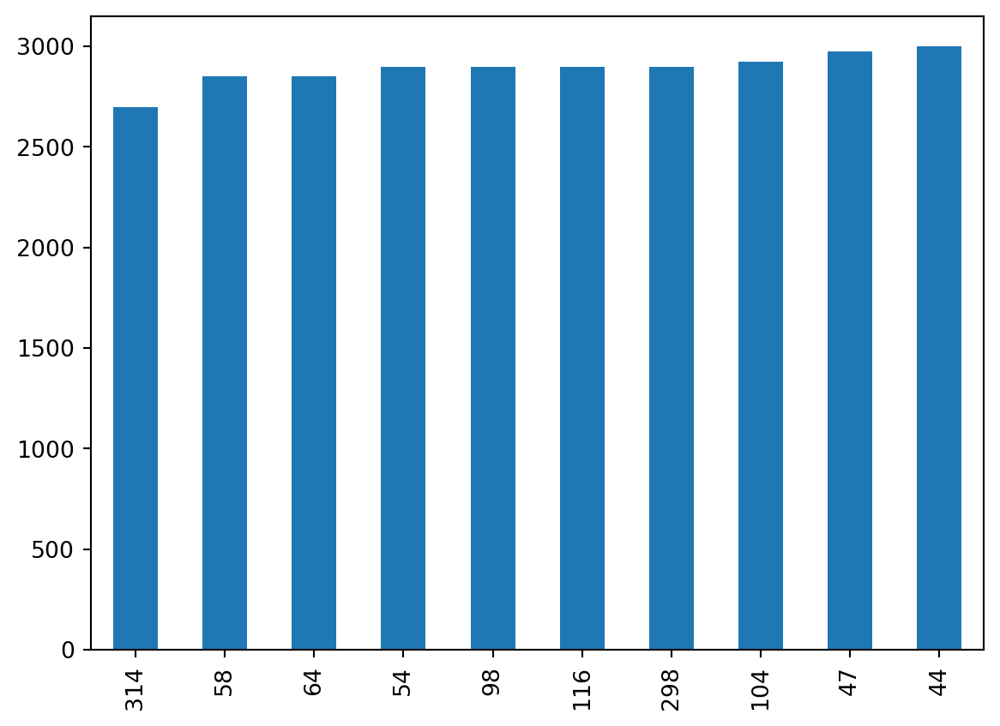

| year | CSM_winter | CSM_spring | CSM_fall | MUL_winter | MUL_spring | MUL_fall | SDW_winter | SDW_spring | SDW_fall | TJE_winter | TJE_spring | TJE_fall | |
|---|---|---|---|---|---|---|---|---|---|---|---|---|---|
| 0 | 2010 | 39.0 | 40.0 | 50.0 | 45.0 | NaN | 61.0 | NaN | 75.0 | 85.0 | NaN | NaN | 81.0 |
| 1 | 2011 | 48.0 | 44.0 | NaN | 58.0 | 52.0 | NaN | 78.0 | 74.0 | NaN | 67.0 | 70.0 | NaN |
| 2 | 2012 | 51.0 | 43.0 | 49.0 | 57.0 | 58.0 | 53.0 | 71.0 | 72.0 | 73.0 | 70.0 | 63.0 | 69.0 |
3 Basic plotting
In this lesson we will learn to use the plot() method of a pandas.DataFrame to create simple exploratory graphs from tabular data.
Learning objectives
By the end of this lesson students will be able to:
- Obtain and interpret preliminary information about a
pandas.DataFrameusing methods such asinfo()(structure),describe()(summary statistics),nunique()(unique value counts),unique()(distinct values),and value_counts()(frequency counts) - Create simple exploratory plots using the
plot()method forpandas.DataFramesto visualize trends and distributions - Understand the concept of performing operations on a
pandas.DataFramein-place - Apply method chaining to enable concise and readable code
About the data
In this lesson we will reuse the annual estimates of bird species abundance in four coastal wetlands along the California coast that we used in the previous lesson on subsetting a pandas.DataFrame. This dataset was derived for education purposes for this course from the UCSB SONGS Mitigation Monitoring: Wetland Performance Standard - Bird Abundance and Species Richness dataset [1]. The SONGS dataset was collected as part of the San Onofre Nuclear Generating Station (SONGS) San Dieguito Wetland Restoration monitoring program.
The annual bird species abundance estimates is a CSV file with 13 columns and 14 rows. You can see the first three rows below.
The four wetlands where the bird surveys occured are Carpinteria Salt Marsh (CSM), Mugu Lagoon (MUL), the San Dieguito Wetland (SDW), and the Tijuana Estuary (TJE). The values from the second column to the last column correspond to the number of different bird species recorded across the survey sites in each wetland during winter, spring, and fall of a given year. For example, the CSM_fall column has the number of species recorded in fall at Carpinteria Salt Marsh across years. The year column corresponds to the calendar year on which the data was collected. Surveys have happened yearly from 2010 to 2023.
plot() method
Let us start by loading the data:
import pandas as pd
# Read in file
df = pd.read_csv('data/wetlands_seasonal_bird_diversity.csv')
# Check the first 5 rows
df.head()| year | CSM_winter | CSM_spring | CSM_fall | MUL_winter | MUL_spring | MUL_fall | SDW_winter | SDW_spring | SDW_fall | TJE_winter | TJE_spring | TJE_fall | |
|---|---|---|---|---|---|---|---|---|---|---|---|---|---|
| 0 | 2010 | 39.0 | 40.0 | 50.0 | 45.0 | NaN | 61.0 | NaN | 75.0 | 85.0 | NaN | NaN | 81.0 |
| 1 | 2011 | 48.0 | 44.0 | NaN | 58.0 | 52.0 | NaN | 78.0 | 74.0 | NaN | 67.0 | 70.0 | NaN |
| 2 | 2012 | 51.0 | 43.0 | 49.0 | 57.0 | 58.0 | 53.0 | 71.0 | 72.0 | 73.0 | 70.0 | 63.0 | 69.0 |
| 3 | 2013 | 42.0 | 46.0 | 38.0 | 60.0 | 58.0 | 62.0 | 69.0 | 70.0 | 70.0 | 69.0 | 74.0 | 64.0 |
| 4 | 2014 | 38.0 | 43.0 | 45.0 | 49.0 | 52.0 | 57.0 | 61.0 | 78.0 | 71.0 | 60.0 | 81.0 | 62.0 |
A pandas.DataFrame has a built-in method plot() for plotting. When we call it without specifying any other parameters plot() creates one line plot for each of the columns with numeric data.
# Default plot(): one line plot per column with numeric data
df.plot()As we can see, this doesn’t make much sense! In particular, look at the x-axis. The default for plot is to use the values of the index as the x-axis values. Let’s see some examples about how to improve this situation.
Line plots
We can make a line plot of one column against another by using the following the general syntax:
df.plot(x='x_values_column', y='y_values_column')Example
If we want to plot the bird surveys at Carpinteria Salt Marsh across years we can do:
# Birds species registered during winter at CSM yearly
df.plot(x='year', y='CSM_winter')
We can do some basic customization specifying other parameters of the plot() method. Some basic ones are:
title: title to use for the plot.xlabel: name to use for the x-label on x-axisylabel: bame to use for the y-label on y-axiscolor: change the color of our plotlegend: boolean valueTrueorFalse.True(default) includes the legend,Falseremoves the legend
In action:
df.plot(x='year',
y='CSM_winter',
title='Bird species registered during winter at Carpinteria Salt Marsh',
xlabel='Year',
ylabel='Number of bird species',
color='green',
legend=False
)You can see all the optional parameters for the plot() function in the documentation.
Check-in
Plot a graph of the spring bird surveys at Mugu Lagoon with respect to the years. Include some basic customization.
Use the
isna()method forpandas.Seriesand row selection to select the rows in which Mugu Lagoon has NAs during the spring survey.
Multiple line plots
We can plot multiple line plots by updating these parameters in the plot() method:
y: a list of column names that will be plotted against the x-axiscolor: a dictionary{'column_1' : 'color_1', 'column_2':'color_2}specifying the color of each column’s line plot
Example
Let’s say we want to compare the bird surveys at the Tijuana Estuary during spring and fall across years.
df.plot(x='year',
y=['TJE_spring', 'TJE_fall'],
title = 'Seasonal bird surveys at Tijuana Estuary',
xlabel='Year',
ylabel='Number of bird species',
color = {'TJE_spring':'#F48FB1',
'TJE_fall': '#AB47BC'
}
)Notice that for specifying the colors we used a HEX code, this gives us more control over how our graph looks.
We can also create separate plots for each column by setting the subset to True.
df.plot(x='year',
y=['TJE_spring', 'TJE_fall'],
title = 'Seasonal bird surveys at Tijuana Estuary',
xlabel='Year',
ylabel='Number of bird species',
color = {'TJE_spring':'#F48FB1',
'TJE_fall': '#AB47BC'
},
subplots=True
)array([<Axes: xlabel='Year', ylabel='Number of bird species'>,
<Axes: xlabel='Year', ylabel='Number of bird species'>],
dtype=object)Updating the index
Updating the index of our data frame to be something other than the default integers numbering the rows can be a useful operation for plotting. To update the index we use the set_index() method for a pandas.DataFrame. It’s general syntax is:
df = df.set_index(new_index)where new_index is:
- the name of the column in the data frame
dfwe want to use as new index - if our new index is not a column in the data frame, an array or
pandas.Seriesof the same length as our data frame (we need one index per row).
This operation does not happen in-place.
- A funciton acting in-place means that our original object (in this case a
pandas.DataFrame) is modified. - If the function does not act in-place, a new object (in this case a
pandas.DataFrame) is created and the original is not modified.
If we wanted to update our df data frame we could do an explicit assignment to reassign the output of set_index() to df:
# Set `column_name` column in df as the new index (reassignment)
df = df.set_index('column_name')or use the optional inplace parameter:
# Set `column_name` column in df as the new index (modify df in-place)
df.set_index('column_name', inplace=True)
In general, avoid using the
inplace=True argument and favor explicit variable assignments
Check the information about the inplace parameter in the set_index() documentation. You will often see the inplace parameter in methods for pandas.DataFrames. The best practice is to avoid inplace=True for better readability and maintainable code. Explicitly assigning the result to a new variable or the same variable makes it clear that an operation has occurred.
Example
In all our previous examples we used the year column as the x-axis. Since all our bird survey variables are dependent on the year, it makes sense to use the year column as the index of the data frame:
# Update index to be the year column
df = df.set_index('year')
df.head()| CSM_winter | CSM_spring | CSM_fall | MUL_winter | MUL_spring | MUL_fall | SDW_winter | SDW_spring | SDW_fall | TJE_winter | TJE_spring | TJE_fall | |
|---|---|---|---|---|---|---|---|---|---|---|---|---|
| year | ||||||||||||
| 2010 | 39.0 | 40.0 | 50.0 | 45.0 | NaN | 61.0 | NaN | 75.0 | 85.0 | NaN | NaN | 81.0 |
| 2011 | 48.0 | 44.0 | NaN | 58.0 | 52.0 | NaN | 78.0 | 74.0 | NaN | 67.0 | 70.0 | NaN |
| 2012 | 51.0 | 43.0 | 49.0 | 57.0 | 58.0 | 53.0 | 71.0 | 72.0 | 73.0 | 70.0 | 63.0 | 69.0 |
| 2013 | 42.0 | 46.0 | 38.0 | 60.0 | 58.0 | 62.0 | 69.0 | 70.0 | 70.0 | 69.0 | 74.0 | 64.0 |
| 2014 | 38.0 | 43.0 | 45.0 | 49.0 | 52.0 | 57.0 | 61.0 | 78.0 | 71.0 | 60.0 | 81.0 | 62.0 |
# Simple plot of Carpinteria Salt Marsh winter surveys
df.plot(y='CSM_winter')
If needed, we can reset the index to be the numbering of the rows:
df = df.reset_index()
df.head()| year | CSM_winter | CSM_spring | CSM_fall | MUL_winter | MUL_spring | MUL_fall | SDW_winter | SDW_spring | SDW_fall | TJE_winter | TJE_spring | TJE_fall | |
|---|---|---|---|---|---|---|---|---|---|---|---|---|---|
| 0 | 2010 | 39.0 | 40.0 | 50.0 | 45.0 | NaN | 61.0 | NaN | 75.0 | 85.0 | NaN | NaN | 81.0 |
| 1 | 2011 | 48.0 | 44.0 | NaN | 58.0 | 52.0 | NaN | 78.0 | 74.0 | NaN | 67.0 | 70.0 | NaN |
| 2 | 2012 | 51.0 | 43.0 | 49.0 | 57.0 | 58.0 | 53.0 | 71.0 | 72.0 | 73.0 | 70.0 | 63.0 | 69.0 |
| 3 | 2013 | 42.0 | 46.0 | 38.0 | 60.0 | 58.0 | 62.0 | 69.0 | 70.0 | 70.0 | 69.0 | 74.0 | 64.0 |
| 4 | 2014 | 38.0 | 43.0 | 45.0 | 49.0 | 52.0 | 57.0 | 61.0 | 78.0 | 71.0 | 60.0 | 81.0 | 62.0 |
Check-in
- Without running the code, give a step-by-step breakdown of what this code is doing:
df.set_index('year').loc[:,'SDW_winter':'TJE_fall'].plot()Is this code modifying the data frame
df? Why or why not?Run the code and examine the graph. Review the data description. Do we have all the necessary information to make sure it makes sense to directly compare the surveys at these different sites?
Method chaining
The code used in the check-in
df.set_index('year').loc[:,'SDW_winter':'TJE_fall'].plot()is an example of method chaining. Each method in the chain returns an object (typically the same object), allowing the next method to be called directly on the result. This is a powerful technique that makes code concise and readable.
Chaining methods can result in lines of code that are too long and hard to read. We can break up chains of methods by using parenthesis:
(df.set_index('year')
.loc[:,'SDW_winter':'TJE_fall']
.plot()
)
Method chaining and the R pipe operator
If you are familiar with R, you may have noticed that the period . in the method chianing acts in the same way as the R pipe operator (%>% or |>). The syntax of one method per line is similar to what is used in the tidyverse, except that the pipe is used at the end of the line, while the period is used at the beginning of the line.
An alternative to the previous code chaining could have been:
year_index_df = df.set_index('year')
subset_df = year_index_df.loc[:,'SDW_winter':'TJE_fall']
subset_df.plot()While this accomplishes the same output, several variables are created along the way and it can be difficult to keep track of what is what.
Use method chaining wisely
Method chaining is particularly useful in pandas for streamlining multiple data manipulations. However:
- method chaining should be used with care to avoid overly complex and difficult-to-debug code, and
- if you’re not familiar with the methods, it’s better to apply them individually and review the results after each step.
We will move on to another dataset for the rest of this lesson.
About the data
For the next plots we will use the Palmer Penguins dataset [2] developed by Drs. Allison Horst, Alison Hill and Kristen Gorman. This dataset contains size measurements for three penguin species in the Palmer Archipelago, Antarctica during 2007, 2008, and 2009.

The dataset has 344 rows and 8 columns. We can see it’s first three rows below:
| species | island | bill_length_mm | bill_depth_mm | flipper_length_mm | body_mass_g | sex | year | |
|---|---|---|---|---|---|---|---|---|
| 0 | Adelie | Torgersen | 39.1 | 18.7 | 181.0 | 3750.0 | male | 2007 |
| 1 | Adelie | Torgersen | 39.5 | 17.4 | 186.0 | 3800.0 | female | 2007 |
| 2 | Adelie | Torgersen | 40.3 | 18.0 | 195.0 | 3250.0 | female | 2007 |
Data exploration
The data is usually accessed through the palmerpenguins R data package [2]. In this lesson we will access the CSV directly into our workspace using the URL: https://raw.githubusercontent.com/allisonhorst/palmerpenguins/main/inst/extdata/penguins.csv
Let’s start by reading in the data:
# Read in data
URL = 'https://raw.githubusercontent.com/allisonhorst/palmerpenguins/main/inst/extdata/penguins.csv'
penguins = pd.read_csv(URL)
penguins.head()| species | island | bill_length_mm | bill_depth_mm | flipper_length_mm | body_mass_g | sex | year | |
|---|---|---|---|---|---|---|---|---|
| 0 | Adelie | Torgersen | 39.1 | 18.7 | 181.0 | 3750.0 | male | 2007 |
| 1 | Adelie | Torgersen | 39.5 | 17.4 | 186.0 | 3800.0 | female | 2007 |
| 2 | Adelie | Torgersen | 40.3 | 18.0 | 195.0 | 3250.0 | female | 2007 |
| 3 | Adelie | Torgersen | NaN | NaN | NaN | NaN | NaN | 2007 |
| 4 | Adelie | Torgersen | 36.7 | 19.3 | 193.0 | 3450.0 | female | 2007 |
And getting some preliminary information:
# Check column data types and NA values
penguins.info()<class 'pandas.core.frame.DataFrame'>
RangeIndex: 344 entries, 0 to 343
Data columns (total 8 columns):
# Column Non-Null Count Dtype
--- ------ -------------- -----
0 species 344 non-null object
1 island 344 non-null object
2 bill_length_mm 342 non-null float64
3 bill_depth_mm 342 non-null float64
4 flipper_length_mm 342 non-null float64
5 body_mass_g 342 non-null float64
6 sex 333 non-null object
7 year 344 non-null int64
dtypes: float64(4), int64(1), object(3)
memory usage: 21.6+ KB# Simple statistics about numeric columns
penguins.describe()| bill_length_mm | bill_depth_mm | flipper_length_mm | body_mass_g | year | |
|---|---|---|---|---|---|
| count | 342.000000 | 342.000000 | 342.000000 | 342.000000 | 344.000000 |
| mean | 43.921930 | 17.151170 | 200.915205 | 4201.754386 | 2008.029070 |
| std | 5.459584 | 1.974793 | 14.061714 | 801.954536 | 0.818356 |
| min | 32.100000 | 13.100000 | 172.000000 | 2700.000000 | 2007.000000 |
| 25% | 39.225000 | 15.600000 | 190.000000 | 3550.000000 | 2007.000000 |
| 50% | 44.450000 | 17.300000 | 197.000000 | 4050.000000 | 2008.000000 |
| 75% | 48.500000 | 18.700000 | 213.000000 | 4750.000000 | 2009.000000 |
| max | 59.600000 | 21.500000 | 231.000000 | 6300.000000 | 2009.000000 |
We can also subset the dataframe to get information about a particular column or groups of columns:
# Count unique values in categorical columns and year
penguins[['species', 'island', 'sex', 'year']].nunique()species 3
island 3
sex 2
year 3
dtype: int64# Get unique values in species column
penguins['species'].unique()array(['Adelie', 'Gentoo', 'Chinstrap'], dtype=object)# Number of values per unique value in species column
penguins['species'].value_counts()species
Adelie 152
Gentoo 124
Chinstrap 68
Name: count, dtype: int64kind argument in plot()
At the beginning of the lesson we talked about how the plot() method creates a line plot by default. The parameter that controls this behaviour is the kind parameter. By changing the value of kind we can create different kinds of plots. Let’s look at the documentation to see what these values are:
pandas.DataFrame.plot documentation. Accessed on Sept 25,2024Notice the default value of kind is 'line'.
Let’s change the kind parameter to create some different plots.
Scatter plots
Suppose we want to visualy compare the flipper length against the body mass, we can do this with a scatterplot:
penguins.plot(kind='scatter',
x='flipper_length_mm',
y='body_mass_g')We can update some other arguments to customize the graph:
penguins.plot(kind='scatter',
x='flipper_length_mm',
y='body_mass_g',
title='Flipper length and body mass for Palmer penguins',
xlabel='Flipper length (mm)',
ylabel='Body mass (g)',
color='#ff3b01',
alpha=0.4 # Controls transparency
)Bar plots
We can create bar plots of our data setting kind='bar' in the plot() method.
For example, let’s say we want to get data about the 10 penguins with lowest body mass. We can first select this data using the nsmallest() method for series:
smallest = penguins['body_mass_g'].nsmallest(10)
smallest314 2700.0
58 2850.0
64 2850.0
54 2900.0
98 2900.0
116 2900.0
298 2900.0
104 2925.0
47 2975.0
44 3000.0
Name: body_mass_g, dtype: float64We can then plot this data as a bar plot
smallest.plot(kind='bar')
If we wanted to look at other data for these smallest penguins we can use a different call to the nsmallest method:
penguins.nsmallest(10, 'body_mass_g')| species | island | bill_length_mm | bill_depth_mm | flipper_length_mm | body_mass_g | sex | year | |
|---|---|---|---|---|---|---|---|---|
| 314 | Chinstrap | Dream | 46.9 | 16.6 | 192.0 | 2700.0 | female | 2008 |
| 58 | Adelie | Biscoe | 36.5 | 16.6 | 181.0 | 2850.0 | female | 2008 |
| 64 | Adelie | Biscoe | 36.4 | 17.1 | 184.0 | 2850.0 | female | 2008 |
| 54 | Adelie | Biscoe | 34.5 | 18.1 | 187.0 | 2900.0 | female | 2008 |
| 98 | Adelie | Dream | 33.1 | 16.1 | 178.0 | 2900.0 | female | 2008 |
| 116 | Adelie | Torgersen | 38.6 | 17.0 | 188.0 | 2900.0 | female | 2009 |
| 298 | Chinstrap | Dream | 43.2 | 16.6 | 187.0 | 2900.0 | female | 2007 |
| 104 | Adelie | Biscoe | 37.9 | 18.6 | 193.0 | 2925.0 | female | 2009 |
| 47 | Adelie | Dream | 37.5 | 18.9 | 179.0 | 2975.0 | NaN | 2007 |
| 44 | Adelie | Dream | 37.0 | 16.9 | 185.0 | 3000.0 | female | 2007 |
Histograms
We can create a histogram of our data setting kind='hist' in plot().
# Using plot without subsetting data - a mess again
penguins.plot(kind='hist')To gain actual information, let’s subset the data before plotting it. For example, suppose we want to do a preliminary graph for the distribution of flipper length. We could do it in this way:
# Distribution of flipper length measurements
# First select data, then plot
penguins['flipper_length_mm'].plot(kind='hist',
title='Penguin flipper lengths',
xlabel='Flipper length (mm)',
grid=True)
Check-in
Select the
bill_length_mmandbill_depth_mmcolumns in thepenguinsdataframe and then update the kind parameter toboxto make boxplots of the bill length and bill depth.Create a simple histogram of the flipper length of female gentoo penguins.
References
[1]
S. C. Schroeter et al., “UCSB SONGS Mitigation Monitoring: Wetland Survey - Bird Abundance.” Environmental Data Initiative, 2024. doi: 10.6073/PASTA/5E5E4D0C6BBF455B9F2474ED05C31072. Available: https://portal.edirepository.org/nis/mapbrowse?packageid=edi.649.6. [Accessed: Sep. 13, 2024]
[2]
A. M. Horst, A. P. Hill, and K. B. Gorman, Palmerpenguins: Palmer archipelago (antarctica) penguin data. 2020. Available: https://allisonhorst.github.io/palmerpenguins/